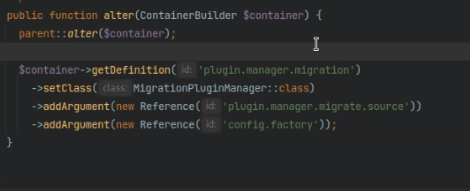
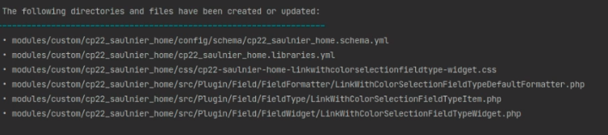
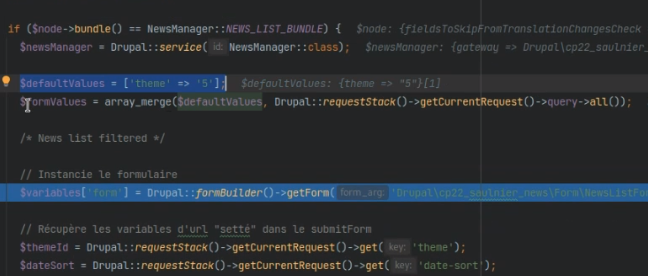
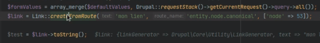

L'interet de l'interface est de se separer de la dependance et de la classe principale (Les 2 éléments sont définis sur l'interface donc possibilité d'associer une autre class)
On permet la possibilité d'utiliser l'interface par d'autre classes, ca normalise le fonctionnnement des methodes
Utilité plugin
LEs plugins sont chacunes une entite et le plugin manager permet de les sourcer.
drupal plugin dpm (avec la drupal console ). Cette console est dépréciée donc pas de generation avec mais permet de recuperer de informations sans probleme
Cette commande permet de récuperer toutes les informations des plugins et les plugins déclarés
Utilisation du plugin
Le constructer donnera les informations indispensables
formatterPluginManager est le manager pour les plugins
Adresse du manager de plugin : /home/ubuntu/sites/cp22_saulnier_cedrick/web/core/lib/Drupal/Core/Field/FormatterPluginManager.php
Que ce soit les hook ou les plugin drupal stocke e cache ces éléments. ainsi dès que l'on cree un plugin il faut vider les caches.
Creer un module field formatter
connaitre les infos de plugin
bin/drush dpl | grep formater
Ou placer le module ?
en regarder dans le manager : FormatterPluginManager
Ou trouver les annotations
Avec un exemple d'autre plugin deja existant
En regardant dans le manager puis en regardant l'adresse des annotations
Les annotations : /home/ubuntu/sites/cp22_saulnier_cedrick/web/core/lib/Drupal/Core/Field/Annotation/FieldFormatter.php
Les fields permettent de definir ou apparaitra le fieldformatter (string, string_long...). Pour trouver cela on fait uene recherche sur FieldType
Implement une interface
FormatterIntrface comme indiqué dans le manager principal FormatterPluginManager
Etend une base
On étend la classe avec le plugin de base (pour trouver la base on effectue une recherche sur implement FormatterInterface)
Implementer les méthodes obligatoires
Les nourrir et verifier
Activer le module puis le plugin est disponible
Possibilité de mettre la vue et les anotations dans un hook
Ceci est l'ancienne methode mais elle fonctionne
Utilisation des modules
Les informations issues d'API
il faut faire attention au format des données (tableaux à plat ou plusieurs niveaux par exemple des tableaux dans des tableaux..)
Si par ex on recupere des infos d'une api mais que l'on doit adapter le format des données
Dans ce cas on peut creer un fieldformatter qui transformera les données
Lors de generation d'un plugin
discovery type c'est comment il recupere la liste des plugin.
En general on choisi les annotations
Lorsque l'on developpe son plugin
Il faut laisser la possibilité aux personnes de modifir les éléments du modules
Cela permet d'avoir un menu contrib qui soit pertinent
Laisser des hooks qui permettent d'alterer les réponses et affichages
Les derivatives
C'est une version supplementaire d'un plugin. Un peu comme une image qui aura une fonctionnalité différente.
L'interet de ca est de faire apparaitre ou pas les plugins en fonction de ton backOffice.
Ca permet de maitriser facilement l'utilisation des plugins.
Ces derivatives existent dans le code et son manipulables (même si ce n'est pas ca fonction principale première)
Charger les derivatives
lorsque que l'on va chercher dans les plugins pour chercher la derivative :
Autre exemple de recherche de derivative ou plugin

Les derivatives sont des plugins rattachés à un plugin reference. Lorsque l'on recherche une derivative avec getDefinition on ne peutr pas trop differencier les plugin des derivatives.
Les fields Widget
Comande de generation
drush generate field-widget
lors de la generation : creation de ces fichiers

Les forms
Creation du form
avec le form state, on definit la methode comme get
on pete le cache pour etre sur
puis lorsque que le build a ete effectué on reoi vers une methode.
Celle ci reecrit l'url
On peut de même utiliser cleanValues
Recuperation de valeurs
Il serait bien de mettre la logique du form dans un manager plutot que dans le module
On peut recuperer les valeurs avec le getCurrentResquest et les mettre dans une variable pour ne pas avoir à manipuler les request

pour resumer
Drupal n'est pas génial dans la gestion des formulaire sen get
on peut ajouter un arguments en plus dans le build form qui permet de definir les valeur par defaut
Ce tableau on le balancer directement dans le manager (avec constantes au pire) on peut faire le mapping
Utilisation des traits
L'avantage
Le trait peut etre dans une notion d'heritage peut etre tres utile.
Il est preferable d'utyiliser un trait plutot que d'utiliser un abstract (qui reste assez compliqué lorsque l'on doit l'utiliser dans plusieurs endroits)
Avec le trait il n'y a pas de methodes obligatoires
les routes
Pour les nodes la royute type est entity.node.canonical
Ilm faut ajouter le 3e parametre avec le node et son id

Les noms de route que l'on utilise seront definis dans les .routing
puis on le met en string pour avoir l'éléménet utilisable dans le navigateur